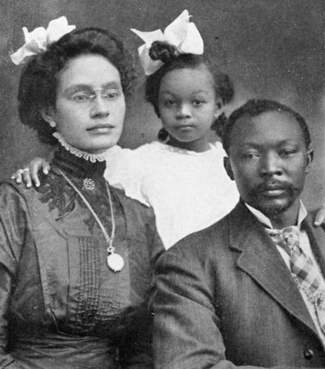
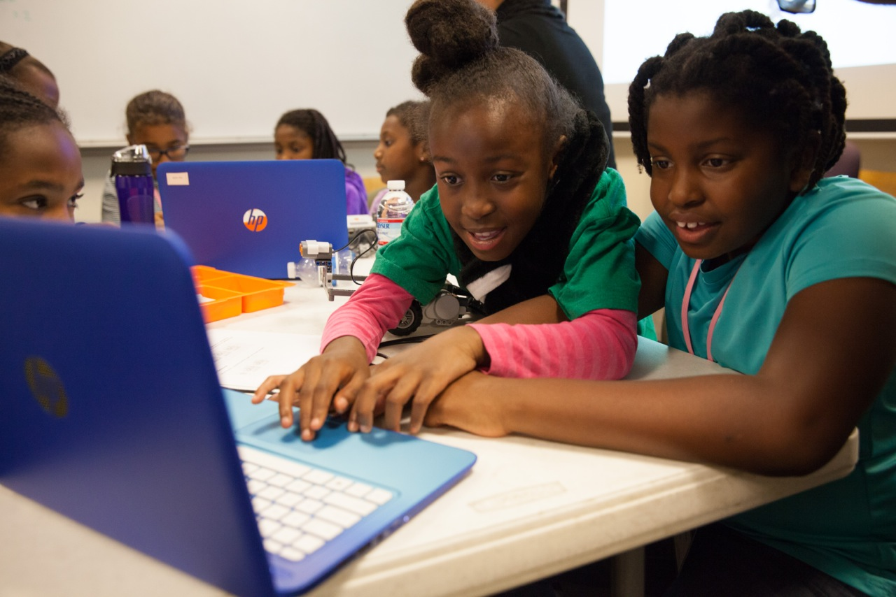

In 1907, when Retha and Samwell Munder left their small stationery shop to our grandmother,
Pearl, they coudn't have predicted that she would partner with (and eventually marry)
Aloysius Difflin, a gifted calligrapher and artist. The pair went on to craft their own unique brand
of paper stock, and transformed a small, black-owned business into a successful corporation.

At The MUNDER DIFFLIN Co., we're evolving, too. We're not afraid to move forward into
the future, because we take the best of the past along with us. For more than 100 years,
we've followed in the traditions set forth by our ancestors.
And we've been defying convention for as long as we've been in business.
the future, because we take the best of the past along with us. For more than 100 years,
we've followed in the traditions set forth by our ancestors.
And we've been defying convention for as long as we've been in business.

We may have traded a brick-and-mortar for an online shop,
but the old traditions remain: earth-friendly, boutique-quality paper
at affordable prices, and extradordinary service with a (cyber) smile.
but the old traditions remain: earth-friendly, boutique-quality paper
at affordable prices, and extradordinary service with a (cyber) smile.

Today's MUNDER DIFFLIN is innovating once again. After the 2010 launch of Gurch,
our high-eco paper made from 50% post-consumer waste revolutionized the industry,
we are thrilled to introduce Barsh - a light-weight, eco paper available in over
60 rainbow-rich colors. This year saw the introduction of Heber, made from an
unprecedented 80% post-consumer waste, and Maran, our first ever high-eco paper
made from entirely renewable resources, including South African bamboo, or bamboes,
grown by Fair Trade farmers, and hemp, grown in our very own garden.
❮s;
❯
our high-eco paper made from 50% post-consumer waste revolutionized the industry,
we are thrilled to introduce Barsh - a light-weight, eco paper available in over
60 rainbow-rich colors. This year saw the introduction of Heber, made from an
unprecedented 80% post-consumer waste, and Maran, our first ever high-eco paper
made from entirely renewable resources, including South African bamboo, or bamboes,
grown by Fair Trade farmers, and hemp, grown in our very own garden.